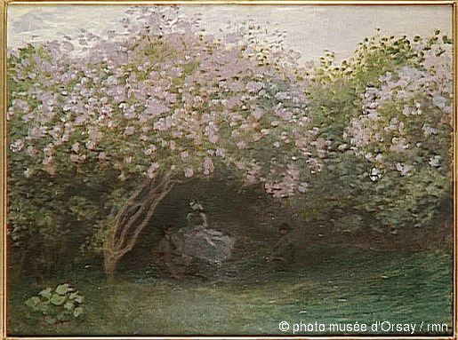

Phenomenology of the Weather
Climate as Landscape:

Claude Monet, Lilas, Temps Gris, 1872 - 1873,
oil on canvas, 50,2 x 65,2 cm, Paris, Musée d’Orsay.
Knebusch, in his writing Art and climate (change) perception: Outline of a phenomenology of climate (2008) suggests that art can be used to communicate a global, invisible and phenomenological concept of climate and weather and of climate change.
Knebusch references both modern philosophers writing about phenomenology of weather and climate (e.g. Gernot Böhme, 2011), as well as contemporary artists such as Janine Randerson
and Andrea Polli, which makes his writing an interesting starting point for me. I similarly wish to advance a both theoretical and artistic research on the Phenomenology of Weather.
References
Böhme, G. (2011). Das Wetter und die Gefühle. Für eine Phänomenologie des Wetters. Gefühle als Atmosphären. Neue Phänomenologie und philosophische Emotionstheorie. Berlin, 153-166.
Knebusch, J. (2008). Art and climate (change) perception: Outline of a phenomenology of climate. Sustainability: a new frontier for the arts and cultures, 242-262.